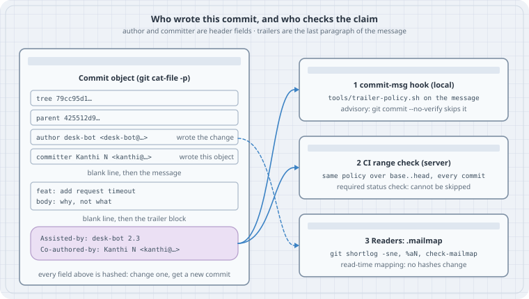

Trailers and mailmap: keeping agent commits honest
Trailers and mailmap: keeping agent commits honest
After this page you can say, for any commit, who wrote the change, who wrote the commit object, and which people and tools helped. You can add that last part with git commit --trailer and git interpret-trailers, read it back with --parse and %(trailers), enforce it with a commit-msg hook plus a CI check, and clean up identity drift with .mailmap. The running example is a coding agent called desk-bot that commits next to a human, Kanthi.
Thesis
A commit has exactly two identity fields in its header: author and committer. Everything else about who was involved lives in trailers. Trailers are Key: value lines in the last paragraph of the message. Git hashes all of it. Git verifies none of it.
So honesty is a convention you have to set up yourself:
- An agent commits under its own identity. It does not borrow the human’s
user.name. - The agent records what it is in a trailer (
Assisted-by:). The humans who shaped the change go inCo-authored-by:. - Only a human adds
Signed-off-by:, because that line is a legal statement (the DCO). - A local hook catches mistakes early. A CI check on the pushed range is the gate, because hooks can be skipped.
.mailmapfixes how identities read (inshortlogandlog). It never rewrites history.
Mental model
commit object (what cat-file -p prints)
tree 79cc95d1…
parent 425512d9…
author desk-bot <desk-bot@users.noreply.example.com> 1792211400 +0530 ← wrote the change
committer Kanthi N <kanthi@example.com> 1792216800 +0530 ← wrote this object
(amend, rebase, cherry-pick, am)
feat: add request timeout ← subject
← blank line
Why the timeout exists … ← body
← blank line
Assisted-by: desk-bot 2.3 ┐ trailer block: the LAST paragraph,
Co-authored-by: Kanthi N <kanthi@example.com> ┘ every line `Key: value`
| Field | Set from | Changes when |
|---|---|---|
| author | --author= if given, else GIT_AUTHOR_NAME/EMAIL env, else author.name/email, else user.name/email |
Set when the commit is first made. Amend, rebase and cherry-pick keep it unless you pass --reset-author or --author |
| committer | GIT_COMMITTER_NAME/EMAIL env, else committer.name/email, else user.name/email |
Every time the object is rewritten (amend, rebase, cherry-pick, am) |
| trailers | The message text: --trailer, -s, an editor, a hook |
When someone edits the message |
The env vars win over config. git-commit(1) says this under COMMIT INFORMATION: author.name and committer.name “override user.name and user.email if set and are overridden themselves by the environment variables”. Case 2 is that sentence going wrong.
Trailer is Git’s word for the structured footer. GitHub reads Co-authored-by: to credit co-authors. The Linux kernel uses Signed-off-by:, Co-developed-by:, Reviewed-by:, and for AI tools Assisted-by:. Git itself only knows the format.
Worked examples
Tested on Debian 13 (Linux 6.12), Git 2.47.3. Current upstream is Git 2.56.0 (2026-09-28). The trailer behaviour shown here is the same in 2.56, with two exceptions. Both are called out where they matter (Case 4 and Case 8).
Every lab sets GIT_CONFIG_GLOBAL=/dev/null and GIT_CONFIG_NOSYSTEM=1 so your own ~/.gitconfig stays out of it. Every lab also pins GIT_AUTHOR_DATE and GIT_COMMITTER_DATE, so the hashes below come out the same on your machine. Run the labs in order. They share /tmp/trailers-lab.
Case 3: Writing trailers
git commit --trailer (Git 2.32+) runs the message through git interpret-trailers. You get one consistent block, with no hand-typed blank-line mistakes.
#!/usr/bin/env bash
# lab-03-add-trailers.sh — write trailers with git commit --trailer and interpret-trailers
set -euo pipefail
export GIT_CONFIG_GLOBAL=/dev/null GIT_CONFIG_NOSYSTEM=1
export GIT_AUTHOR_DATE='2026-10-17T13:00:00+05:30' GIT_COMMITTER_DATE='2026-10-17T13:00:00+05:30'
cd /tmp/trailers-lab
BOT=(-c user.name=desk-bot -c user.email=desk-bot@users.noreply.example.com)
echo 'timeout=5s' > config.ini && git add config.ini
git "${BOT[@]}" commit -q -m 'feat: add request timeout' \
--trailer 'Assisted-by: desk-bot 2.3' \
--trailer 'Co-authored-by: Kanthi N <kanthi@example.com>'
echo '--- message as stored'
git log -1 --format=%B
echo '--- aliases: short names for long keys (repo config)'
git config trailer.coauth.key 'Co-authored-by'
git config trailer.assist.key 'Assisted-by'
printf 'fix: clamp timeout\n\nNegative values fell through to 0.\n' |
git interpret-trailers --trailer 'assist: desk-bot 2.3' \
--trailer 'coauth: Kanthi N <kanthi@example.com>'
echo '--- the same trailer twice: default ifExists=addIfDifferentNeighbor'
printf 'x\n\nCo-authored-by: Kanthi N <kanthi@example.com>\n' |
git interpret-trailers --trailer 'coauth: Kanthi N <kanthi@example.com>'
echo '--- --if-exists=add forces a duplicate'
printf 'x\n\nCo-authored-by: Kanthi N <kanthi@example.com>\n' |
git interpret-trailers --if-exists=add --trailer 'coauth: Kanthi N <kanthi@example.com>'
echo '--- tokens are prefix-matched against configured keys (case-insensitive)'
printf 'y\n' | git interpret-trailers --trailer 'co: B <b@example.com>' --trailer 'Co-Author: C <c@example.com>'
echo '--- ...but only configured ones: outside this repo they stay as typed'
(cd /tmp && printf 'y\n' | git interpret-trailers --trailer 'Co-Author: C <c@example.com>')./lab-03-add-trailers.sh--- message as stored
feat: add request timeout
Assisted-by: desk-bot 2.3
Co-authored-by: Kanthi N <kanthi@example.com>
--- aliases: short names for long keys (repo config)
fix: clamp timeout
Negative values fell through to 0.
Assisted-by: desk-bot 2.3
Co-authored-by: Kanthi N <kanthi@example.com>
--- the same trailer twice: default ifExists=addIfDifferentNeighbor
x
Co-authored-by: Kanthi N <kanthi@example.com>
--- --if-exists=add forces a duplicate
x
Co-authored-by: Kanthi N <kanthi@example.com>
Co-authored-by: Kanthi N <kanthi@example.com>
--- tokens are prefix-matched against configured keys (case-insensitive)
y
Co-authored-by: B <b@example.com>
Co-authored-by: C <c@example.com>
--- ...but only configured ones: outside this repo they stay as typed
y
Co-Author: C <c@example.com>There are three things to notice:
trailer.<alias>.keyturnscoauth:intoCo-authored-by:. Once a key is configured, any--trailertoken that is a case-insensitive prefix of the alias or the key expands to the full key. Here evenco:andCo-Author:becameCo-authored-by:. Without that config, tokens are written exactly as typed. Case 5 shows this quietly “fixing” a typo before a hook can see it.- The default
trailer.ifExistsisaddIfDifferentNeighbor. Adding the sameCo-authored-byagain does nothing.--if-exists=addforces the duplicate. -s/--signoffaddsSigned-off-by:with the committer identity. An agent should not use it (Case 5).
Case 4: What Git actually parses as a trailer
A line that looks like a trailer is only a trailer if Git’s parser agrees. git interpret-trailers --parse is the parser. CI should ask it, not grep.
#!/usr/bin/env bash
# lab-04-parse-trailers.sh — what Git actually parses as a trailer
set -euo pipefail
export GIT_CONFIG_GLOBAL=/dev/null GIT_CONFIG_NOSYSTEM=1
cd /tmp/trailers-lab
parse() { printf '%s\n' "--- $1"; printf "$2" | git interpret-trailers --parse; echo "[exit $?]"; }
parse 'clean block' 'feat: x\n\nbody\n\nCo-authored-by: A <a@example.com>\nAssisted-by: desk-bot 2.3\n'
parse 'no blank line before' 'feat: x\nCo-authored-by: A <a@example.com>\n'
parse 'one prose line inside (repo has trailer.coauth.key set)' 'feat: x\n\nCo-authored-by: A <a@example.com>\nthanks for the review!\n'
(cd /tmp && parse 'same text, no trailer config at all' 'feat: x\n\nCo-authored-by: A <a@example.com>\nthanks for the review!\n')
parse 'space in the key' 'feat: x\n\nCo authored by: A <a@example.com>\n'
parse 'a URL as the last line' 'feat: x\n\nsee the issue\n\nhttps://example.com/issues/42\n'
echo '--- read trailers out of history'
git log --format='%h %s%n co-authors: %(trailers:key=co-authored-by,valueonly,separator=%x2C )%n assisted: %(trailers:key=Assisted-by,valueonly)' -3./lab-04-parse-trailers.sh--- clean block
Co-authored-by: A <a@example.com>
Assisted-by: desk-bot 2.3
[exit 0]
--- no blank line before
[exit 0]
--- one prose line inside (repo has trailer.coauth.key set)
Co-authored-by: A <a@example.com>
[exit 0]
--- same text, no trailer config at all
[exit 0]
--- space in the key
[exit 0]
--- a URL as the last line
https: //example.com/issues/42
[exit 0]
--- read trailers out of history
b77371a feat: add request timeout
co-authors: Kanthi N <kanthi@example.com>
assisted: desk-bot 2.3
aaa3097 chore: add version file
co-authors:
assisted:
d594efa feat: add ping fixture
co-authors:
assisted: Read each result against the rules in git-interpret-trailers(1):
- No blank line: the
Co-authored-byline is part of the subject paragraph, not a trailer. Anything that parses trailers, including a forge crediting co-authors, will not see it. GitHub’s instructions call for the empty line for this reason. - One prose line inside the block: the block has to be either all trailers, or contain at least one Git-generated or user-configured trailer and be at least 25% trailers. Inside the lab repo,
trailer.coauth.keyfrom Case 3 makesCo-authored-by“user-configured”, so it parses. The same text outside any repo parses to nothing. This is why the parse can differ between your laptop and CI. Keep the block clean. - Space in the key: keys are ASCII letters, digits and
-only.Co authored by:is prose. - URL as the last line: Git 2.47 reads
https://example.com/issues/42as the trailerhttps: //example.com/issues/42. That is a real bug. Git 2.56 fixed it (“avoid mistaking lines that begin with a URL … as trailer lines”), and the current manual adds a rule that a candidate whose value starts with//right after the:is not a trailer. On older Git, keep URLs out of the last paragraph or put them in aRefs:trailer.
%(trailers:key=…,valueonly) in --format matches keys case-insensitively. It is the cheapest way to get co-authors or tools out of history for a report.
Case 5: A commit-msg hook, and why it is not enough
The same policy script serves both the local hook and CI. The script parses trailers with Git and applies these rules:
- An agent-authored commit (email matching
*-bot@*or*[bot]@*) must carryAssisted-by:. - An agent identity must not add
Signed-off-by:for itself. The kernel’scoding-assistants.rstsays it directly: “AI agents MUST NOT add Signed-off-by tags. Only humans can legally certify the Developer Certificate of Origin.” Co-authored-by:must beName <email>, the form GitHub documents.- Unknown keys are rejected, which catches typos the parser does see.
Save trailer-policy.sh, commit-msg and check-range.sh in the same directory as the labs. lab-05-hook.sh copies them into the repo: the policy goes in tools/, where CI can run it, and the hook goes in .git/hooks/.
#!/usr/bin/env bash
# trailer-policy.sh — shared policy for the commit-msg hook and the CI check
# usage: trailer-policy.sh <author-email> <message-file>
set -uo pipefail
author_email=$1 msg=$2
fail=0
err() { printf 'trailer-policy: %s\n' "$*" >&2; fail=1; }
is_bot=0
case $author_email in *-bot@*|*'[bot]'@*) is_bot=1 ;; esac
assisted=0
while IFS= read -r line; do
key=${line%%:*} val=${line#*: }
case ${key,,} in
assisted-by) assisted=1 ;;
co-authored-by) [[ $val =~ ^[^\<\>]+\ \<[^\<\>@\ ]+@[^\<\>\ ]+\>$ ]] \
|| err "Co-authored-by needs 'Name <email>': $val" ;;
signed-off-by) [[ $is_bot == 1 && $val == *"<$author_email>"* ]] \
&& err "an agent identity cannot sign off (DCO is a human statement): $val" ;;
reviewed-by|acked-by|fixes|refs|change-id) ;;
*) err "unknown trailer key '$key' (typo? allowed: Assisted-by Co-authored-by Signed-off-by Reviewed-by Acked-by Fixes Refs Change-Id)" ;;
esac
done < <(git interpret-trailers --parse "$msg")
[[ $is_bot == 1 && $assisted == 0 ]] && err "agent-authored commit ($author_email) needs an Assisted-by: trailer"
exit $fail#!/usr/bin/env bash
# .git/hooks/commit-msg — runs the shared policy on the message being committed
email=$(git var GIT_AUTHOR_IDENT | sed -E 's/^.*<([^>]*)>.*$/\1/')
exec "$(git rev-parse --show-toplevel)/tools/trailer-policy.sh" "$email" "$1"#!/usr/bin/env bash
# tools/check-range.sh — CI: run the same policy over every commit in a range
# usage: check-range.sh <base>..<head>
set -uo pipefail
bad=0
for rev in $(git rev-list --reverse "$1"); do
git log -1 --format=%B "$rev" > /tmp/msg.$$
if tools/trailer-policy.sh "$(git log -1 --format=%ae "$rev")" /tmp/msg.$$ 2>/tmp/err.$$; then
echo "ok $(git log -1 --format='%h %ae %s' "$rev")"
else
echo "FAIL $(git log -1 --format='%h %ae %s' "$rev")"; sed 's/^/ /' /tmp/err.$$; bad=1
fi
done
rm -f /tmp/msg.$$ /tmp/err.$$
exit $bad#!/usr/bin/env bash
# lab-05-hook.sh — enforce the policy locally, then see why CI must enforce it too
set -uo pipefail
export GIT_CONFIG_GLOBAL=/dev/null GIT_CONFIG_NOSYSTEM=1
export GIT_AUTHOR_DATE='2026-10-17T14:00:00+05:30' GIT_COMMITTER_DATE='2026-10-17T14:00:00+05:30'
cd /tmp/trailers-lab
mkdir -p tools && cp "$OLDPWD"/{trailer-policy.sh,check-range.sh} tools/ && cp "$OLDPWD/commit-msg" .git/hooks/
chmod +x tools/*.sh .git/hooks/commit-msg
git add tools && git commit -q -m 'ci: add trailer policy' && echo "policy committed: $(git log -1 --format=%h)"
BOT=(-c user.name=desk-bot -c user.email=desk-bot@users.noreply.example.com)
n=0
try() {
echo "--- $1"; shift
n=$((n+1)); echo "$n" > n.txt; git add n.txt
if "$@"; then echo "[committed $(git log -1 --format=%h)]"; git log -1 --format='%(trailers)' | sed '/^$/d;s/^/ /'
else echo "[rejected, exit $?]"; git reset -q n.txt; fi
}
try 'agent commit, no Assisted-by' git "${BOT[@]}" commit -q -m 'feat: bump n'
try 'agent signs off as itself' git "${BOT[@]}" commit -q -s -m 'feat: bump n' --trailer 'Assisted-by: desk-bot 2.3'
try 'misspelled key' git "${BOT[@]}" commit -q -m 'feat: bump n' --trailer 'Assisted-by: desk-bot 2.3' --trailer 'Coauthored-by: Kanthi N <kanthi@example.com>'
try 'co-author without an email' git "${BOT[@]}" commit -q -m 'feat: bump n' --trailer 'Assisted-by: desk-bot 2.3' --trailer 'Co-authored-by: Kanthi'
try 'prefix of a configured key' git "${BOT[@]}" commit -q -m 'feat: bump n' --trailer 'Assisted-by: desk-bot 2.3' --trailer 'Co-Author: Kanthi N <kanthi@example.com>'
try '--no-verify skips the hook' git "${BOT[@]}" commit -q --no-verify -m 'feat: bump n'./lab-05-hook.shpolicy committed: 356ca80
--- agent commit, no Assisted-by
trailer-policy: agent-authored commit (desk-bot@users.noreply.example.com) needs an Assisted-by: trailer
[rejected, exit 1]
--- agent signs off as itself
trailer-policy: an agent identity cannot sign off (DCO is a human statement): desk-bot <desk-bot@users.noreply.example.com>
[rejected, exit 1]
--- misspelled key
trailer-policy: unknown trailer key 'Coauthored-by' (typo? allowed: Assisted-by Co-authored-by Signed-off-by Reviewed-by Acked-by Fixes Refs Change-Id)
[rejected, exit 1]
--- co-author without an email
trailer-policy: Co-authored-by needs 'Name <email>': Kanthi
[rejected, exit 1]
--- prefix of a configured key
[committed 7d279bc]
Assisted-by: desk-bot 2.3
Co-authored-by: Kanthi N <kanthi@example.com>
--- --no-verify skips the hook
[committed 1b640af]There are two lessons here:
- “Prefix of a configured key” committed with the correct key.
--trailer 'Co-Author: …'is a case-insensitive prefix of the configured keyCo-authored-by, so Git expanded it before the hook ran. The hook never saw a typo. That is helpful, but it means a hand-typed message and a--trailerargument can produce different text from the same intent. --no-verifycommitted a commit that breaks the policy.githooks(5)sayscommit-msg“can be bypassed with the--no-verifyoption”. Hooks are not even cloned. Every clone has to install them. A hook is a convenience for honest users. It is not a control.
Case 6: The gate lives on the server
#!/usr/bin/env bash
# lab-06-ci.sh — the server-side half: check every commit since the policy landed
export GIT_CONFIG_GLOBAL=/dev/null GIT_CONFIG_NOSYSTEM=1
cd /tmp/trailers-lab
base=$(git log --format=%h --grep='^ci: add trailer policy' -1)
tools/check-range.sh "$base..HEAD"; echo "[check-range exit $?]"./lab-06-ci.shok 7d279bc desk-bot@users.noreply.example.com feat: bump n
FAIL 1b640af desk-bot@users.noreply.example.com feat: bump n
trailer-policy: agent-authored commit (desk-bot@users.noreply.example.com) needs an Assisted-by: trailer
[check-range exit 1]In a real pipeline the range is the pull request’s base..head. Make the job a required status check on the protected branch. Then --no-verify, a missing hook, or a commit made in a web editor all hit the same rule. The script exits non-zero and names the commit, so the fix is git rebase -i with reword on that commit (or, on Git 2.54+, git rebase --trailer; see Case 8).
Case 7: .mailmap fixes how identities read, not what history says
Identities drift. A container commits as root, and a laptop has a work address. .mailmap at the top of the tree maps each of them to one canonical identity.
#!/usr/bin/env bash
# lab-07-mailmap.sh — one person (or agent), many identities; .mailmap fixes the read side
set -euo pipefail
export GIT_CONFIG_GLOBAL=/dev/null GIT_CONFIG_NOSYSTEM=1
export GIT_AUTHOR_DATE='2026-10-17T15:00:00+05:30' GIT_COMMITTER_DATE='2026-10-17T15:00:00+05:30'
cd /tmp/trailers-lab
rm -f .git/hooks/commit-msg # this lab is about reading, not policy
# Before the bot got a real identity, it committed with whatever the container had.
echo a > old.txt && git add old.txt
git -c user.name=root -c user.email=root@buildbox.local commit -q -m 'chore: old bot run'
echo b > work.txt && git add work.txt
git -c user.name='K. N.' -c user.email=kanthi@work.example.com commit -q -m 'docs: from the work laptop'
echo '--- shortlog, no mailmap'
git shortlog -sne HEAD
cat > .mailmap <<'MAP'
Kanthi N <kanthi@example.com> <kanthi@work.example.com>
desk-bot <desk-bot@users.noreply.example.com> root <root@buildbox.local>
MAP
echo '--- shortlog, with .mailmap'
git shortlog -sne HEAD
echo '--- check-mailmap'
git check-mailmap 'root <root@buildbox.local>' '<kanthi@work.example.com>' 'Someone <x@example.com>'
echo '--- %an (raw) vs %aN (mapped); the objects are unchanged'
git log -2 --format='%h raw=%an <%ae> mapped=%aN <%aE>'./lab-07-mailmap.sh--- shortlog, no mailmap
5 desk-bot <desk-bot@users.noreply.example.com>
2 Kanthi N <kanthi@example.com>
1 K. N. <kanthi@work.example.com>
1 root <root@buildbox.local>
--- shortlog, with .mailmap
6 desk-bot <desk-bot@users.noreply.example.com>
3 Kanthi N <kanthi@example.com>
--- check-mailmap
desk-bot <desk-bot@users.noreply.example.com>
Kanthi N <kanthi@example.com>
Someone <x@example.com>
--- %an (raw) vs %aN (mapped); the objects are unchanged
b0821b0 raw=K. N. <kanthi@work.example.com> mapped=Kanthi N <kanthi@example.com>
6c42fda raw=root <root@buildbox.local> mapped=desk-bot <desk-bot@users.noreply.example.com>The mapping format is Proper Name <proper@email> [Commit Name] <commit@email> (gitmailmap(5)). git shortlog always applies it. git log and git show apply it because log.mailmap is true by default. In --format, use %aN/%aE (mapped) or %an/%ae (raw). The commits 6c42fda and b0821b0 are unchanged: same author bytes, same hashes. Two caveats:
%(trailers)is not mailmapped. ACo-authored-by:with an old address stays old.- The
trailer-policy.shcheck in Case 6 reads raw%ae. That is deliberate. Policy should judge what was recorded, not what it is displayed as.
Case 8: What is newer than this box’s Git
These were not run here, because Git 2.47.3 does not have them. They come from the upstream release notes and manuals:
- Git 2.54:
git rebase --trailer=<trailer>appends a trailer to every rebased commit through the interpret-trailers machinery. It implies--force-rebase, so every commit in the range gets a new hash and a new committer line. That is the one-command fix for “the agent forgotAssisted-by:on six commits”. It is still a history rewrite, so do it before the branch is shared. - Git 2.56: the URL-as-trailer fix from Case 4, and an updated
git-interpret-trailers(1)that defines keys (alphanumeric and hyphen) and documents how comment lines are handled.
The trap
The commit looks fine in a forge UI, and you assume the metadata is checked. It isn’t. Git hashes whatever identity your environment produced: a stale GIT_AUTHOR_NAME, the human’s user.email borrowed by an agent, or a Co-authored-by glued to the subject line with no blank line before it. A commit-msg hook only helps on machines where someone installed it and nobody passed --no-verify. Then .mailmap makes shortlog look tidy and hides the drift. The record you meant to be honest is honest only by accident.
The boring rule
Agents commit as themselves, with stray
GIT_*identity variables unset. They say what they are inAssisted-by:and never sign off. Humans who shaped the change go inCo-authored-by: Name <email>as the last paragraph. Parse trailers withgit interpret-trailers --parse, nevergrep. Enforce the rule on the pushed range in a required CI check. Use the hook only as an early warning. Use.mailmapfor display, never as a substitute for correct identities.
Try this
- Run
git var GIT_AUTHOR_IDENTin the shell your agent uses. Thenexport GIT_AUTHOR_EMAIL=x@example.comand run it again. Put anenv -u …wrapper in front of the agent’s commit command. - Add
trailer.assist.key "Assisted-by"to a repo and commit with--trailer 'assist: <tool> <version>'. Read it back withgit log --format='%h %(trailers:key=Assisted-by,valueonly)'. - Feed
git interpret-trailers --parsea message whose last line is a URL. If your Git is older than 2.56, you will see the bogushttps:trailer. Decide where URLs go in your messages. - Wire
tools/check-range.sh "$BASE..$HEAD"into your CI and make it a required check. Push a--no-verifycommit to a test branch and watch it fail. - Write a
.mailmapfor your own repo and comparegit shortlog -snebefore and after.
Sources
git-commit(1): COMMIT INFORMATION (identity precedence),--trailer,--signoff: https://git-scm.com/docs/git-commitgit-interpret-trailers(1)andtrailer.*config (Git 2.56 manual): https://git-scm.com/docs/git-interpret-trailersgit-var(1)(GIT_AUTHOR_IDENT,GIT_COMMITTER_IDENT): https://git-scm.com/docs/git-vargithooks(5)(commit-msg,--no-verify): https://git-scm.com/docs/githookspretty-formats(%(trailers),%aN): https://git-scm.com/docs/pretty-formatsgitmailmap(5),git-check-mailmap(1),log.mailmap: https://git-scm.com/docs/gitmailmapgit-rebase(1)--trailerand Git 2.54 release notes: https://git-scm.com/docs/git-rebase, https://github.com/git/git/blob/master/Documentation/RelNotes/2.54.0.adoc- Git 2.56 release notes (trailer URL fix, interpret-trailers docs): https://github.com/git/git/blob/master/Documentation/RelNotes/2.56.0.adoc
- GitHub Docs, “Creating a commit with multiple authors”: https://docs.github.com/en/pull-requests/committing-changes-to-your-project/creating-and-editing-commits/creating-a-commit-with-multiple-authors
- Linux kernel, “AI Coding Assistants” (
Assisted-by:, noSigned-off-byfrom agents): https://docs.kernel.org/process/coding-assistants.html - Linux kernel, “Submitting patches” (
Signed-off-by,Co-developed-by): https://docs.kernel.org/process/submitting-patches.html